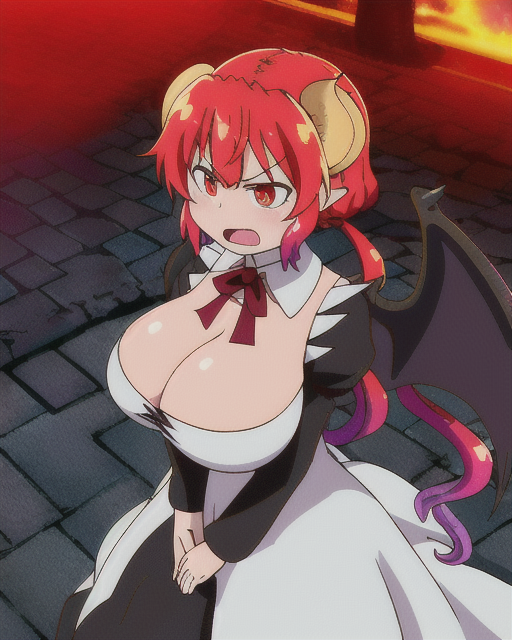
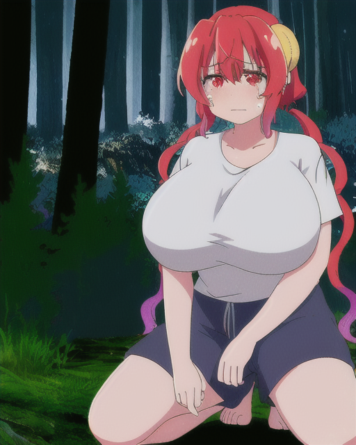

back
The format for this will be various paragraphs accompanied by AI generated images that illustrate the story at that moment (pardon if the image doesn't match the descriptions in the scene exactly, AI-san is trying their best). All of the writing is my own. Also, I've never watched season 2, lol.

It was a short day in August, and as the sky oranged and the wedding ended the bride stepped away noiselessly. The courtyard of the church was glowing with autumn light, her elevated heels clacked against the uneven square cobbles, and she brought herself to a rough, worn iron bench, ornate with angels and dragons, and she sat underneath the trees. The wind picked up, bending the air and surging as if through a wire, and once it settled there was Tohru putting a hand on her shoulder.
"You did well. You're doing well," she spoke immediately, and took a seat beside Ilulu. "You stopped him. The sun is out now."
"Bite it," Ilulu snapped, her eyes fiery and tearless. "Having me do this for some humans? For you? I never liked him." The wind licked her bare shoulders, cold and unmagical. She cupped her breasts that were warm, fiery and warm, but it felt different because she was no longer only hers.
The ceremony had went by as expected, even flawlessly some might say, though there was no processional, because the groom was long dead. Thus it was a ceremony in a parallel sense, but a unification of two souls nonetheless.
Tohru tried to put on a smile. "I can't thank you enough."
"Thank you, thank you, thank you!? Are you still yammering?" Ilulu cried. "Why couldn't YOU marry the stupid moon? Last I checked, you're a Chaos Dragon too." She threw out her elbow and struck Tohru in the arm, but Tohru did not retaliate. Ilulu started up into the center of the courtyard and swore, wisps of flame darting from her lips and dissolving into the air. Her back bulged and writhed and a terrible ripping of fabric was heard as coal-black wings erupted from her narrow frame, her top fluttering off her with the damage to its construction. Her breasts were huge and firm with red-hot gas, and with one more uninterpretable cry she shot into the air, her wings heaving air with great, deep bellows of sound. The cobblestones beneath where she took off were blackened and angry.
Tohru looked at the spot a moment longer, then let her head hang back. Before she could fully reflect on what had happened, a clamour of footfall indicated that the rest of the attendants were beginning to make their way out. Tohru would have to save Ilulu from the embarrassment of what had really happened. She decided to bottle up her feelings for later.
"Tooohhruu..!" someone called through the brisk autumn air, and Tohru slowly raised her head to spy Lucoa dressed completely inappropriately for the weather, a black dress with the belly and underboob exposed to allow pudgy flesh to spill out from. Tohru spied an areola slipping dangerously far from where it should be, and she begrudging swung her hand and magicked a black coat into existence over Lucoa's shoulders. "Hey, my boobs have gotten bigger and I want to show them off."
"Whose wedding is it?" Tohru jabbed, unamused with Lucoa's blatant childishness after what Ilulu was feeling. ...
Ilulu tore through the reddening sky until it was black. Only then did she land, and by then she was so far away that she would not be found until she wanted to be found. She touched down in the forest, right through a gap in the trees, still wearing her heels as they dug into the soft earth. Her breasts were still exposed, and they hung pathetically from her chest. She magicked away the wedding dress and felt herself a little better, to be removed from the symbol of her imprisonment — but she knew she couldn't just be naked, even if she was alone, and so she put on a plain white polo and shorts. They felt snug around her body, but constricting around her breasts in a way she couldn't quite ignore. She felt so small, tucked away in a dark part of the world. She couldn't help it but to weep, so hungry for comfort.
She knelt there for a very long time, tears running down her face and softening the ground below her. And when she was done kneeling she lied down, and she thought to herself how much she loathed the human world and all the humans in it. All the dragons too that took comfort in a home away from home. Her head ached and she wanted to be loved, and so she opened a doorway back to the dragon world and pulled herself through.
She stepped out into another forest — but not a real one, not to a human.